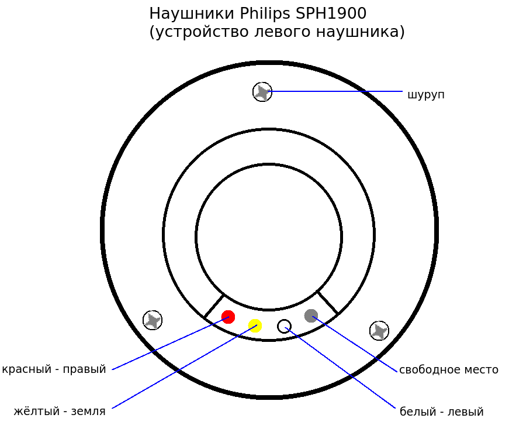
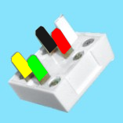
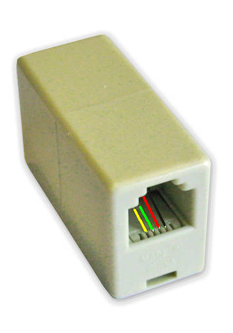

←
⌂
Ламерская схемотехника
[2019, Январь]
Я тут просто собрал немного картинок и схем предметов, которые когда-то чинил.
Наушники Philips SPH1900

Мини-jack (3,5 мм) "мама"
ADSL-вилка

ADSL-розетка

↑
⌂